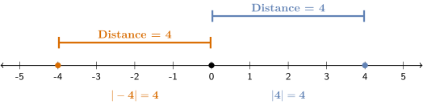
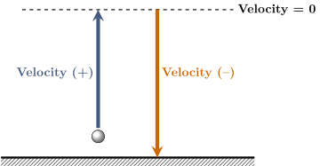

Absolute Value
If you’re cutting a piece of wood to be 10 inches long, being \(0.5\) inches too long is just as
problematic as being \(0.5\) inches too short. In both cases, the size of the error is \(0.5\) and
this is what matters. The concept of absolute value can be used to represent
the magnitude of a mistake, regardless of whether it was an overshot or
undershot.
The absolute value of a number is its distance from zero on a number line.
Since distance is always positive or 0, so is absolute value. Absolute value is
represented by two vertical bars and can be interpreted as the size, strength or
magnitude of a number.
The number line below shows the absolute values of \(-4\) and \(4.\) Since their absolute values
are the same, the numbers \(-4\) and \(4\) have the same strength or magnitude.

Show Alt Text
A horizontal number line from negative 5 to 5 with solid dots plotted at negative 4,
0, and 4. Above the line, an orange bar spans from negative 4 to 0 and a blue bar
spans from 0 to 4, both labeled “Distance = 4”. Below the line, it states
that the absolute value of negative 4 is 4 and the absolute value of 4 is 4.
To find the absolute value of a number, think of the number line as a path and
each integer as a step. The absolute value of a number is how many steps you
would have to take to travel from the number to zero. For example, you
would have to take \(2\) steps to travel from \(-2\) to \(0,\) so the absolute value of \(-2\) is \(2.\)
\[ |-2| = 2 \]
Find the absolute value of each number.
\[ |-1| = \begin {prompt} \answer {1} \end {prompt} \]
\[ |7| = \begin {prompt} \answer {7} \end {prompt} \]
\[ |-55| = \begin {prompt} \answer {55} \end {prompt} \]
You are building a custom bookshelf and need to cut boards that are
\(36\) inches long.
A board will be usable if its length is off by no more than
\(0.25\) inch of the target. Suppose
you cut the first board
\(35.8\) inches long. The difference between the actual board length
and the target length is the error.
\begin{eqnarray*} \textbf {Error} &=& 35.8 - 36 \\ & & \\ &=& -0.2 \ \textrm {inches} \end{eqnarray*}
The negative sign indicates that you cut the board too short. However, it only
matters if the board is useable or not, so we take the absolute value to find
the distance from the target length. This distance is called the absolute
error.
\begin{eqnarray*} \textbf {Absolute Error} &=& |35.8 - 36| \\ & & \\ &=& |-0.2| \\ & & \\ &=& \answer {0.2} \ \textrm {inches} \end{eqnarray*}
Is this board usable? Hint: A board is usable if the absolute error is less than or
equal to \(0.25\) inches.
Yes, the absolute error is less than \(0.25\) inches. No, the absolute error is greater than \(0.25\)
inches.
Extra Insight: The Relationship Between Speed and Velocity
In physics, the motion of an object is often described by its velocity, which indicates
its speed and direction. When an object moves upward or to the right, its velocity
is positive and when it moves downward or to the left, its velocity is negative.
We use absolute value to turn velocity into speed.
Speed = |Velocity|
Speed is the magnitude or size of velocity.
When a ball is thrown straight up in the air, its velocity is positive as it moves
upward, zero when it reaches its highest point and negative when it falls back to
Earth. If, after 6 seconds, the velocity of the ball is \(-15\) feet per second, we know
that it is falling back to Earth, since its velocity is negative. Since \(|-15| = 15\) the ball
is traveling at a speed of \(15\) feet per second 6 seconds after it was thrown
upward.

Show Alt Text
A physics
diagram illustrating vertical projectile motion relative to a ground line. A ball is
above the ground on the left. A thick blue upward arrow represents the ball’s
ascending path and is labeled “Velocity” with a plus sign next to it. A dashed
horizontal line marks the peak of the flight, labeled “Velocity = 0”. A thick orange
downward arrow on the right represents the descending path and is labeled “Velocity”
with a minus sign next to it.
A model rocket was launched straight up in the air. After
\(8\) seconds, the velocity of
the rocket was recorded as
\(-12\) feet per second. In which direction was the rocket moving
\(8\) seconds after it was launched?
Downward Upward
What was the rocket’s speed at that moment?
Speed = \(\answer {12}\) feet per second
Opposites
Opposites
Two numbers that are the same distance from zero but on opposite sides of zero are
called opposites.
The opposite of a number is found by changing its sign.
The phrase “the opposite of” is written mathematically as a dash (\(-\)).
State two numbers that are opposites and explain why they are opposites.
The numbers \(3\) and \(-3\) are opposites. They lie the same distance from zero on the
number line, but in opposite directions, and they have the same absolute
values.
Show Alt Text
A
horizontal number line from negative 4 to 4 with solid dots plotted at negative 3, 0,
and 3. Above the line, an orange bar spans from negative 3 to 0 and a blue bar
spans from 0 to 3, both labeled “Distance = 3”. Below the line, it states
that the absolute value of negative 3 is 3 and the absolute value of 3 is 3.
Properties of Opposites
- Opposites have the same absolute value because they are equidistant from
zero.
- One is positive and the other is negative.
- Adding a number and its opposite always results in zero: \(a +(-a) = 0.\)
- Zero is unique because it is its own opposite: \(0= -0.\)
Complete the table.
\[ \renewcommand {\arraystretch }{1.8} \begin {array}{c @{\hspace {30pt}} c @{\hspace {30pt}} c} \text {Number} & \text {Opposite} & \text {Absolute Value} \\ \hline -15 & \answer {15} & \answer {15} \\ 8 & \answer {-8} & \answer {8} \\ 0 & \answer {0} & \answer {0} \\ -2.5 & \answer {2.5} & \answer {2.5} \\ \end {array} \]
The Three Meanings of a Dash \(-\)
In mathematics, the dash is used in three different ways depending on its
role.
- Negative: When a dash is attached directly to a number, it describes
its location on the number line and is read as negative.
- Opposite: A dash placed before parentheses, absolute value or a variable
represents an action: changing the sign or multiplying by \(-1\) and is read as
the opposite of.
- Subtraction: A dash placed between two numbers represents the
operation of subtraction and is read as minus.
Identify the correct way to read each expression.
- \(18 - 5\) is read as Negative 5 Eighteen minus five The opposite of
5.
- \(-20\) is read as Negative 20 The opposite of negative 20 Minus 20.
- \(-|-7|\) is read as The opposite of the absolute value of negative 7 The
opposite of the absolute value of 7. The absolute value of negative 7.
- \(-k\) is read as Dash k Minus k The opposite of k
The Double Negative Property
For any number \(a,\)
\[ -(-a) = a \]
The expression \(-(-a)\) is read as “the opposite of negative \(a\)."
Use the Double Negative Property to simplify the following expressions.
\[ -(-14) = \answer {14} \]
\[ -(-100) = \answer {100}\]
\[ -(-0) = \answer {0} \]
How is the expression
\(-(-22)\) read?
Negative negative 22 Minus negative 22 The opposite of negative 22 The
opposite of 22
If
\(x = -10\), what is the value of
\(-(-x)\)?
\(10\) \(-10\) \(0\)
Remember: \(-(-x) = x,\) therefore since \(x\) started as \(-10\), the final result is also \(-10\).
A common mistake is to treat absolute value like parentheses. Keep in mind
that parentheses are used for grouping, whereas absolute value is an
operation. Make certain you understand the difference between the following
cases.
-
Double Negative with Parentheses
-
Since we have parentheses, we simply find the opposite of negative \(7,\) which is \(7.\)
\[ -(-7) = 7 \]
-
Double Negative with Absolute Value
-
To find the opposite of the absolute value of negative \(7,\) start with the absolute
value: \(|-7| = 7,\) then find the opposite of that result. The opposite of \(7\) is \(-7\) therefore,
\[ -|-7| = -7. \]
Absolute Value vs. Opposite
While absolute value always results in a nonnegative (zero or positive) number,
taking the opposite of a number changes its sign. Therefore, an opposite can be
positive, negative or \(0.\) Note that for the number \(0,\) both its absolute value and its
opposite are \(0.\) Later, you will see how these two concepts are used together to add
integers.
Below, the concept of an opposite has been used to write a rule for finding absolute
value. Notice that this rule doesn’t rely on distance.
Finding the Absolute Value of a Number
-
Positive Numbers and \(0\):
-
The absolute value of a positive number or \(0\) is the number itself.
-
Negative Numbers:
-
The absolute value of a negative number is the opposite of that number.
True or False If a number is negative, its opposite must be positive.
True False
Exactly! The opposite flips the sign, so a negative becomes positive.
True or False Two different numbers can have the same absolute value.
True False
Yep! The numbers \(2\) and \(-2\) have the same absolute values. In fact, all opposites have
the same absolute values.
Which has a greater value: the opposite of
\(-10\) or the absolute value of
\(-10?\)
Neither, they are the same. The opposite of \(-10.\) The absolute value of \(-10.\)
The opposite of \(-10\) is \(10\) and \(|-10| = 10,\) so they are the same.
Two numbers,
\(a\) and
\(b\) are opposites. If the distance between
\(a\) and
\(b\) on a number line
is
\(10\) units, what are the two numbers?
\(-10\) and \(10\) \(-5\) and \(5\) \(-6\) and \(4\) \(-7\) and \(3\)
Draw a number line and with \(a\) and \(b\) ten units apart.
Good job! You made it through this problem and this section.